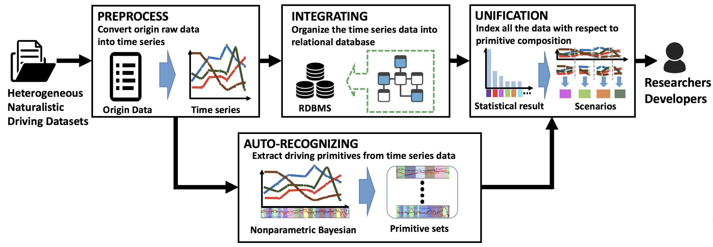

Scenario Based Traffic Data Library
Unifing Heterogeneous Traffic Data using Traffic Primitives

Jiacheng Zhu, Wenshuo Wang, Ding Zhao, ''A Tempt to Unify Heterogeneous Driving Databases using Traffic Primitives,'' Proceedings of the IEEE 21th International Intelligent Transportation Systems Conference (ITSC), Maui Hawaii, US, November
4-8, 2018.
|
Abstract — A multitude of publicly-available driving datasets and data platforms have been raised for autonomous vehicles (AV). However, the heterogeneities of databases in size, structure and driving context make existing datasets practically ineffective due to a lack of uniform frameworks and searchable indexes. In order to overcome these limitations on existing public datasets, this paper proposes a data unification framework based on traffic primitives with ability to automatically unify and label heterogeneous traffic data. This is achieved by two steps: 1)Carefully arrange raw multidimensional time series driving data into a relational database and then 2) automatically extract labeled and indexed traffic primitives from traffic data through a Bayesian nonparametric learning method. Finally, we evaluate the effectiveness of our developed framework using the collected real vehicle data.
TrafficNet: An Open Naturalistic Driving Scenario Library
 Ding Zhao, Yaohui Guo, Yunhan Jack Jia, ''TrafficNet: An Open Naturalistic Driving Scenario Library, '' Proceedings of the IEEE 20th International Intelligent Transportation Systems Conference (ITSC), Yokohama, Japan, October
16-19, 2017.
|
Ding Zhao, Yaohui Guo, Yunhan Jack Jia, ''TrafficNet: An Open Naturalistic Driving Scenario Library, '' Proceedings of the IEEE 20th International Intelligent Transportation Systems Conference (ITSC), Yokohama, Japan, October
16-19, 2017.
|
Abstract — The enormous efforts spent on collecting naturalistic driving data in the recent years has resulted in an expansion of publicly available traffic datasets, which has the potential to assist the development of the self-driving
vehicles. However, we found that many of the attempts to utilize these datasets have failed in practice due to a lack of usability concern from the organizations that host these collected data. For example, extracting data associated with certain
critical conditions from naturalistic driving data organized in chronological order may not be convenient for a vehicle engineer that doesn't have big data analytics experiences. To address the general usability challenges of these publicly available
traffic datasets, we propose TrafficNet, a large-scale and extensible library of naturalistic driving scenarios, aiming at bridging the gap between research datasets and practically usable information for vehicle engineers and researchers. The proposed
web-based driving scenario database preprocesses massive raw traffic data collected in chronological order into an organized scenario-based dataset by applying a set of categorization algorithms to label the naturalistic driving data with six different
critical driving scenarios. TrafficNet opens not only the scenario library but also the source code of these categorization methods to the public, which will foster more sophisticated and accurate scenario-based categorization algorithms to advance
the intelligent transportation research. The source code and the scenario database can be accessed at https://github.com/TrafficNet.